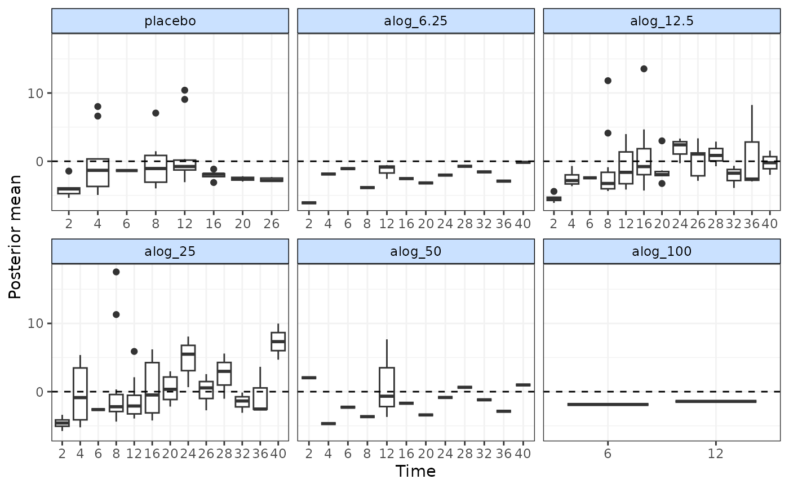
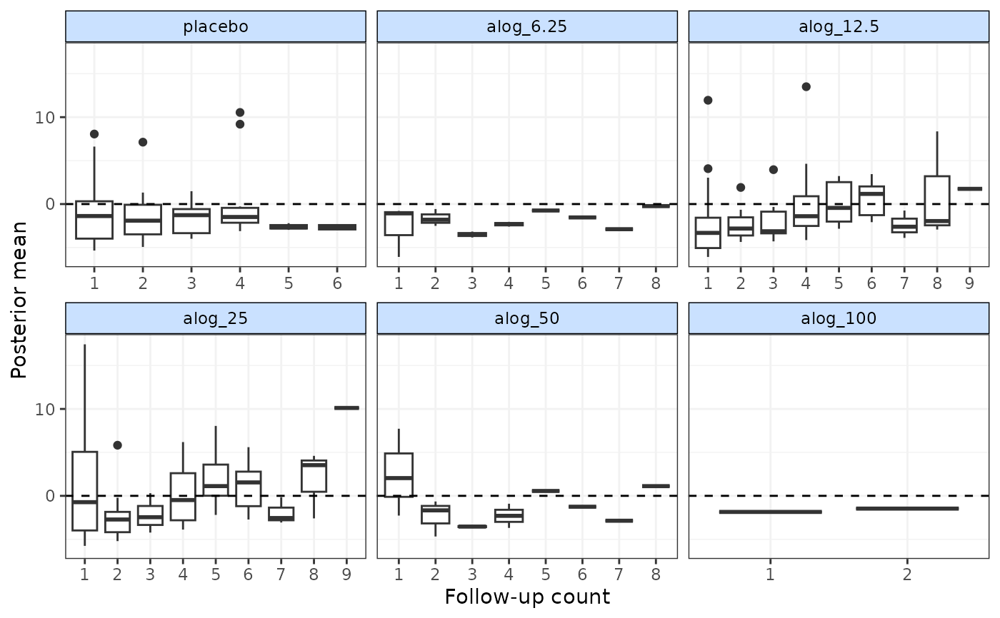

Plot deviance contributions from an MBNMA model
devplot.RdPlot deviance contributions from an MBNMA model
Usage
devplot(
mbnma,
dev.type = "dev",
plot.type = "box",
xaxis = "time",
facet = TRUE,
n.iter = round(mbnma$BUGSoutput$n.iter/4),
n.thin = mbnma$BUGSoutput$n.thin,
...
)Arguments
- mbnma
An S3 object of class
"mbnma"generated by running a time-course MBNMA model- dev.type
Deviances to plot - can be either residual deviances (
"resdev") or deviances ("dev", the default)- plot.type
Deviances can be plotted either as scatter points (
"scatter"- usinggeom_point()) or as boxplots ("box", the default)- xaxis
A character object that indicates whether deviance contributions should be plotted by time (
"time") or by follow-up count ("fup")- facet
A boolean object that indicates whether or not to facet by treatment
- n.iter
The number of iterations to update the model whilst monitoring additional parameters (if necessary). Must be a positive integer. Default is the value used in
mbnma.- n.thin
The thinning rate. Must be a positive integer. Default is the value used in
mbnma.- ...
Arguments to be sent to
ggplot2::ggplot()
Value
Generates a plot of deviance contributions and returns a list containing the
plot (as an object of class c("gg", "ggplot")), and a data.frame of posterior mean
deviance/residual deviance contributions for each observation.
Details
Deviances should only be plotted for models that have converged successfully. If deviance
contributions have not been monitored in mbnma$parameters.to.save then additional
iterations will have to be run to get results for these.
Deviance contributions cannot be calculated for models with a multivariate likelihood (i.e.
those that account for correlation between observations) because the covariance matrix in these
models is treated as unknown (if rho="estimate") and deviance contributions will be correlated.
Examples
# \donttest{
# Make network
alognet <- mb.network(alog_pcfb)
#> Reference treatment is `placebo`
#> Studies reporting change from baseline automatically identified from the data
# Run MBNMA
mbnma <- mb.run(alognet, fun=tpoly(degree=2), intercept=FALSE)
#> Compiling model graph
#> Resolving undeclared variables
#> Allocating nodes
#> Graph information:
#> Observed stochastic nodes: 233
#> Unobserved stochastic nodes: 38
#> Total graph size: 4178
#>
#> Initializing model
#>
# Plot residual deviance contributions in a scatterplot
devplot(mbnma)
#> `dev` not monitored in mbnma$parameters.to.save.
#> additional iterations will be run in order to obtain results for `dev`

# Plot deviance contributions in boxplots at each follow-up measurement
# Monitor for 500 additional iterations
devplot(mbnma, dev.type="dev", plot.type="box", xaxis="fup", n.iter=500)
#> `dev` not monitored in mbnma$parameters.to.save.
#> additional iterations will be run in order to obtain results for `dev`

# }